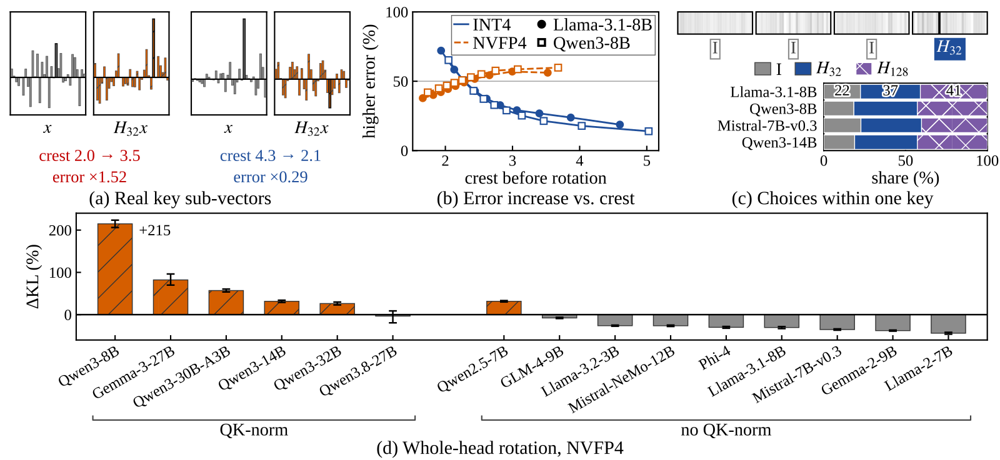
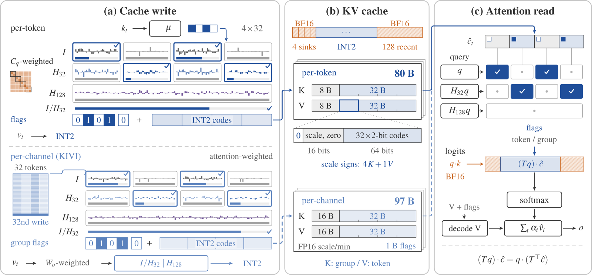
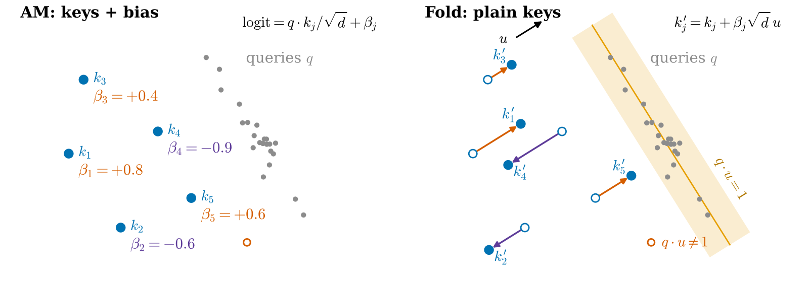
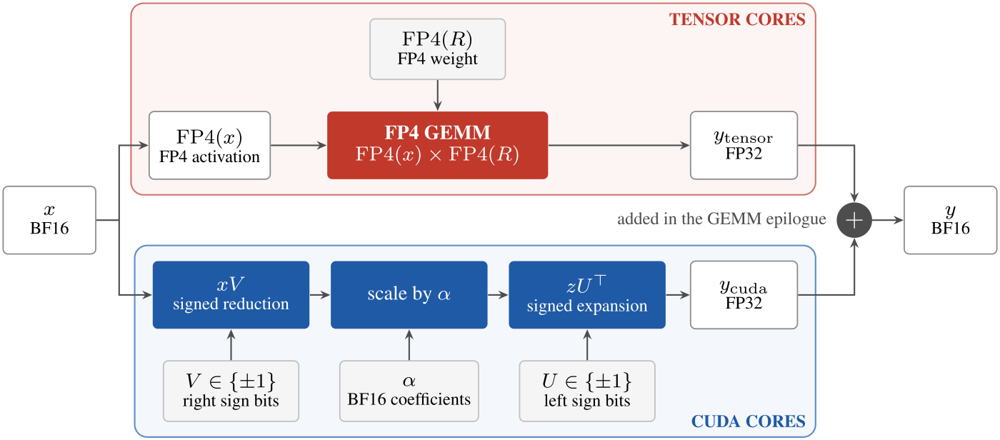
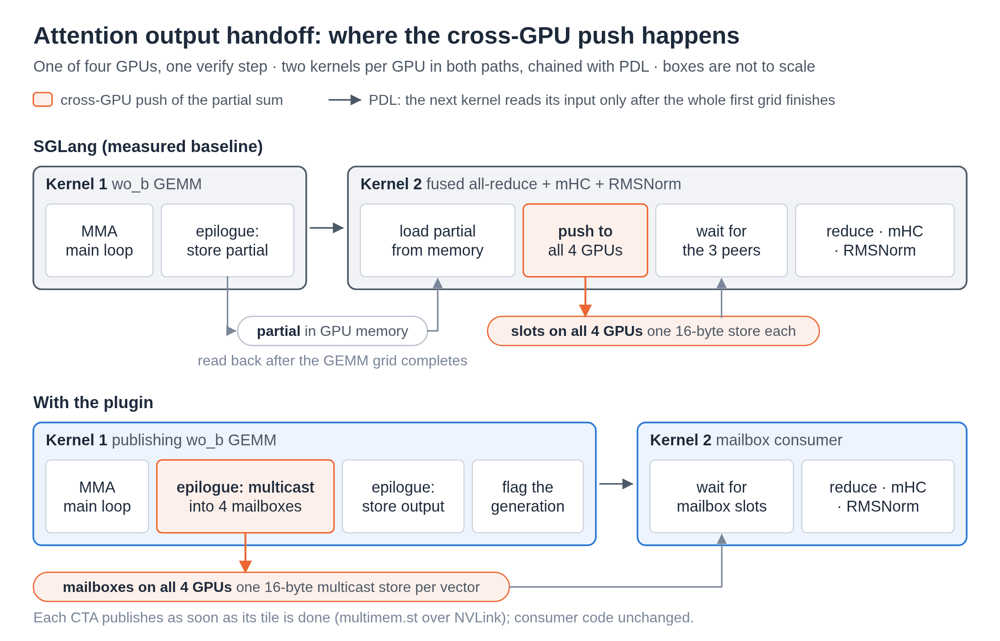

长上下文推理的瓶颈在 KV cache，把其中的 K 向量压到很低的位宽能省下大量显存，但误差难控。常见做法是量化前先把 K 向量旋转一下，默认旋转总有好处。作者发现并非如此：旋转能把一段带尖峰的 K 向量摊平，也会让一段本来平坦的冒出新尖峰，而且两种段常在同一个 K 向量里同时出现。FlagRot 因此在 K 向量写进 cache 时把它切成小段，每段试一下转和不转，哪种让注意力分数的误差更小，就存哪种。衡量误差用的权重事先在校准数据上算好。读取时不把 K 向量转回去，而是把 query 也转到同样的坐标里再相乘。每个值平均只用 2.5 bit 时，在常用的 KIVI（一种 2 bit 的 KV cache 量化方法）上加了 FlagRot，和原模型的 KL 散度从 18.7 降到 12.4。这是 12 个模型的几何平均。做长上下文推理的团队值得读：它说明旋转并不总有好处，而且读取端改动很小，每步只多转一次 query。
它到底在解决什么问题？
长上下文推理每生成一个 token，都要把整个 KV cache 读一遍。在 32k token 的上下文里，Qwen3-8B 一条序列的 BF16 cache 就要 4.8 GB。把每个值压到 2 bit，再加上量化用的缩放系数，平均每个值只要 2.5 到 3 bit，显存能省下约六倍。代价是精度。作者在自己的服务设置里，用最朴素的按 token 2 bit 四舍五入量化，Qwen3-8B 的 LongBench 平均分掉了 11.0 分。按通道量化的 KIVI 已经把这个损失压到 2 分左右，FlagRot 要补的是剩下这一段。
误差的一个主要来源是取值范围。量化时，一组连续的 32 个数共用一个缩放系数。2 bit 只有 4 档，组里只要有一个特别大的数，这 4 档就得拉开去照顾它，其余的小数几乎都被挤到同一档上。
常见的补救是先旋转再量化。这里的旋转是一次 Hadamard 变换：它把每个坐标的值摊到所有坐标上，向量的长度不变。只要 query 也做同样的旋转，两者的点积就和原来一样，所以 K 向量可以换个坐标存。下面用 4 维的小例子（示意，论文里每段是 32 维）看它做了什么。衡量尖不尖用的是峰值比，也就是绝对值最大的那一项除以均方根，越平越接近 1。峰值比越高，低 bit 量化的误差通常越大。这只是经验规律，所以 FlagRot 实际选的时候会把两种版本都量化一遍、直接量误差。
| 一段 K 向量（示意） | 原样 | 旋转后 | 峰值比变化 |
|---|---|---|---|
| 带尖峰的一段 | 4, 0, 0, 0 | 2, 2, 2, 2 | 2 变成 1 |
| 本来就平的一段 | 1, 1, 1, 1 | 2, 0, 0, 0 | 1 变成 2 |
旋转把每一段都往同一个峰值比上拉：尖的变平，平的反而冒出尖峰。作者在真实的 K 向量上量过，旋转后各段的峰值比中位数落在 2.2 附近。在 4 bit 量化下，Llama-3.1-8B 和 Qwen3-8B 最平的那十分之一段里，旋转让约三分之二的段误差变大；在最尖的十分之一段里，只有约六分之一变差。

更麻烦的是，带尖峰的段和平坦的段常常出现在同一个 K 向量里。在 Llama-3.1-8B 的 4 bit 按 token cache 上，FlagRot 最后的选择里，22% 的段保持原样，37% 的段单独旋转，41% 的段跟着整个头一起旋转。同一个头的同一段，换一个 token 偏好也可能变。所以给所有 K 向量统一转一次，即使平均有好处，也会在一部分段上留下多余的误差。
先看全貌：写入时选，读取时转 query
FlagRot 的做法可以分成三步：
- 写入 cache 时：把每个 K 向量按 32 个通道切成几段。每段先在“不转”和“单独转”里挑一个，按下一节说的加权误差来挑。几段各自挑好后拼回一个完整的 K 向量，再和“整个头一起转”的版本比一次，误差小的胜出，量化后存下来。
- 记下选择：每段用 1 个标记位记住自己转没转，整个头再用 1 个标记位记住是不是整体转了。头维度是 128 时，一共 5 个标记位。这些标记位放在缩放系数的符号位里。缩放系数本来总是正数，符号位空着没用，所以在 2.5 bit 的压缩布局里，cache 页一个字节都不用多。
- 读取 cache 时：不把 K 向量转回去，而是把 query 转成两份：一份按段转，一份整个头转。每生成一个 token 只转这一次，所有缓存的 K 向量共用。整头标记为真的 K 向量，直接和整头转过的 query 做点积。其余的 K 向量每一段按自己的标记，和原样的 query 段或转过的 query 段做点积，再加起来。旋转不改变点积，所以这样算出的分数，和把还原后的 K 向量转回原坐标再乘完全一样。量化误差还在，省掉的只是逐个 K 向量的反变换。

这里的关键分工是：写入时花一点力气做选择，读取时每步只多转一次 query。下面拆开讲每一步为什么这样做。
为什么要按“注意力看到的误差”来比？
最直接的比法是看还原误差：量化再还原后，离原来的 K 向量差多远。作者认为这把尺子不对。K 向量的误差最终是通过和 query 的点积影响注意力分数的。一个头的 query 往往把能量集中在少数几个通道上。旋转虽然让一段的总误差变小，却会把剩下的误差平均摊到所有通道上，可能正好摊进 query 最看重的那几个通道。
所以 FlagRot 比较的是加权后的误差。每个候选先量化，再还原、转回原坐标，和原来的 K 向量相减得到误差。然后看这份误差和 query 的点积有多大：误差落在 query 常用的通道上，就算得更重。用的 query 来自校准数据：在 4 段 2048 token 的 WikiText-2 训练文本上跑一遍模型，记下各个头的 query。按 token 量化的版本用这些 query 的平均外积当权重。KIVI 版本还存下这些校准 query，以及每个 query 在校准文本上的 softmax 分母。写入新 K 向量时，用它们算出每个校准 query 会给这个 K 向量多少注意力概率：先用 K 向量和 query 的点积算出 softmax 里的指数项，直接除以存下的分母，超过 1 就按 1 算。打分时，每个校准 query 和误差的点积先平方，再乘上这个注意力概率，全部加起来就是这个 K 向量的误差分。注意力越大，这个 K 向量的误差算得越重。这些统计在评测之前就固定下来，推理时不再改。推理时写入新 K 向量，只用这些固定统计和新 K 向量本身做决定。
这把尺子有多重要，消融给了答案。这组消融用的是每值 3.0 bit 的 KIVI 布局，所以不选时的 KL 是 18.4。如果改用还原误差来选，KL 是 19.1，比不选还差。只按通道加权，降到 13.8；再按注意力概率给每个 K 向量加权，降到 12.3。光是做选择还不够，用还原误差来选，结果比不选还差。
多久做一次决定？
FlagRot 有两种模式。固定模式在校准时为每层、每个头、每一段定一次，之后所有 token 都照这个来，写入时只量化一遍。逐个 K 向量模式则在写入每个 K 向量时都重新比一次，要把它量化三遍（不转、分段转、整头转）再挑最好的。
该用哪种，作者发现取决于量化的方向。KIVI 是一种常用的 2 bit KV 量化。它把同一个头里连续 32 个 token 的 K 向量凑成一组，每个通道在这 32 个 token 上共用一个缩放系数。这一组 K 向量要等最后一个 token 写入后才一起量化，在那之前先存 BF16。所以在 KIVI 上，“逐个 K 向量”实际是每组 32 个 K 向量共用一套标记。比较候选时，把组里 32 个 K 向量的加权误差加起来，选总和最小的那个。组和组之间差别不大，最好的选择也很少变，校准时定一次就差不多够了。在 KIVI 上，固定模式拿到的 KL 降幅，已经是逐组决定的 78%；逐组决定的误差比固定模式只再低 10%。另一类做法按 token 量化：每个 K 向量自己切成 4 组，每组 32 个通道，不和别的 token 共用缩放系数。这时每个 K 向量的形状差别大，逐个 K 向量决定的误差比固定模式能再低 35%。数据也印证了这一点：按 token 量化时，逐个 K 向量的选择只有 39% 到 44% 和固定选择一致；在 KIVI 的组上，这个比例是 62% 到 69%。 Hoot 说

KIVI（按通道量化）
- 共用缩放系数
- 同一个头里连续 32 个 token，每个通道一个
- 谁一起选
- 一组 32 个 K 向量共用一套标记
- 怎么选
- 32 个加权误差加起来，总和小的胜出
- 逐组比固定
- 误差只再低 10%
- 和固定选择一致
- 62% 到 69% 的组
固定模式已拿到逐组决定 78% 的 KL 降幅。
按 token 量化
- 共用缩放系数
- 每个 K 向量自己切 4 组，每组 32 个通道，不和别的 token 共用
- 谁一起选
- 每个 K 向量自己选
- 怎么选
- 写入时量化三遍，挑误差最小的
- 逐个比固定
- 误差再低 35%
- 和固定选择一致
- 只有 39% 到 44% 的 K 向量
K 向量之间差别大，固定一套选择会错过很多。
左边是 KIVI，右边是按 token 量化。KIVI 的组和组很像，校准时定一次就差不多够了。按 token 量化时每个 K 向量差别大，逐个决定更值。 出处: 论文 §4 两种决定方式的比较（正文本节数字）
作者据此做了两个版本。FlagRot-KIVI 是主系统，在 KIVI 上加选择。FlagRot-auto 按 token 量化，量化前先减去一个校准好的 K 向量均值，作者称之为 centering。保留 BF16 的开头和最近 token 的 K 向量也减同一个均值。它能这样减，是因为所有 K 向量都减同一个向量时，同一个 query 的所有注意力分数都平移同样的量，softmax 后的权重不变。有的模型会把注意力分数压在一个上限以内，叫 logit soft-capping。分数平移后再压，权重就会变，所以这条只对不这样压的模型成立。如果某个模型在校准数据上减了均值反而变差，就自动不减，名字里的 auto 指的就是这个开关。
效果怎么样？
先看保真度。作者在 12 个 3B 到 27B 的模型上，算量化后的模型和原 BF16 模型在下一个 token 分布上的 KL 散度（乘以 1000 报告）。下表比较的都是同样每值 2.5 bit 的 2 bit cache：
| cache（每值 2.5 bit） | 12 个模型的平均 KL | 8 个没参与调方法的模型 |
|---|---|---|
| KIVI | 18.7 | 17.6 |
| RotateKV | 18.1 | 19.5 |
| FlagRot-auto | 17.8 | 17.8 |
| FlagRot-KIVI | 12.4 | 12.1 |
RotateKV 是给所有 K 向量统一旋转的代表做法。FlagRot-KIVI 在 12 个模型里有 11 个显著低于 KIVI，有 9 个显著低于 RotateKV。表里的 RotateKV 是作者跑过的两种设置中 KL 较低的那一种。作者只在 4 个模型上调过方法，另外 8 个模型用最终设置只跑了一次，结果是 12.1。这说明收益不是在少数模型上调出来的。按段选转不转在 3 bit 和 4 bit 上同样有效，在 KIVI 上 KL 分别降 31% 和 30%。
再看真实任务。作者把它做成 vLLM 插件，在 H200 上跑长上下文评测：
| 评测 | 模型 | BF16 → KIVI → FlagRot-KIVI | 相比 KIVI |
|---|---|---|---|
| RULER 128k | Llama-3.1-8B-Instruct | 73.7 → 62.3 → 65.2 | +2.9 |
| LongBench v1 | Qwen3-8B | 49.35 → 47.28 → 47.70 | +0.42 |
| LongBench v1 | Llama-3.1-8B-Instruct | 49.70 → 47.38 → 48.24 | +0.86 |
| LongBench v1 | Qwen3-32B | 44.97 → 42.80 → 44.73 | +1.94 |
| LongBench v1 | Qwen3.8-27B | 53.49 → 53.82 → 53.25 | −0.57 |
在 KIVI 掉分的地方，FlagRot 能补回一部分。Qwen3-32B 上补回最多，和 BF16 只差 0.23 分。RULER 上补回的是 KIVI 丢掉的 11.4 分里的 2.9 分，大约四分之一，说明离 BF16 还有距离。Qwen3-8B 上的 +0.42 在误差范围内；这个模型上固定模式反而略好，多 0.72 分。Qwen3.8-27B 是混合架构，64 层里只有 16 层有 KV cache，KIVI 本身就没掉分，加选择反而略降。
最后看成本。在 Qwen3-8B 上，压缩后的 cache 能装下 BF16 的 6.1 倍 token。在 32k 上下文、每个 token 生成时间不超过 60 ms 的限制下，FlagRot-auto 的生成速度是 BF16 的 3.0 倍、FP8 cache 的 1.4 倍，原因是显存够装更多序列，batch 能开得更大。这组吞吐数字来自按 token 量化的 FlagRot-auto。主系统 FlagRot-KIVI 的代价是大 batch 下单步更慢：在 27B 模型上，batch 64 时每个输出 token 的时间比 BF16 长 33%。逐组决定还会让 prefill 吞吐少 5%，固定模式没有这笔开销。
我认为它的局限
第一，任务评测的覆盖面窄。只有 4 个 8B 到 32B 的模型，没有 MoE 模型，没有超过 32B 的模型，GPU 只有 H20 和 H200 两种，推理引擎只有 vLLM。和其他低 bit cache 的对比主要靠模拟出来的 KL，真实服务上的任务对比只有 KIVI 和作者自己的按 token 版本。
第二，在 KIVI 已经不掉分的模型上，它没有额外收益。Qwen3.8-27B 上加选择后 LongBench 反而少了 0.57 分。所以要先确认自己的模型在 2 bit 下确实掉分，再考虑上它。
第三，任务上的提升明显小于 KL 上的提升。KL 降了约三分之一，但两个 8B 模型的 LongBench 只多了 0.42 和 0.86 分。KL 低不等于任务分一定高，上线前要看自己的任务指标。
一个推理团队可以怎么试
- 先确认问题存在。在自己的模型和长上下文任务上跑一遍 2 bit KIVI，看相比 BF16 掉多少分。掉得不多，就没必要加选择。
- 先上固定模式。用几段自己业务的文本做校准，为每层、每个头、每一段定好转不转。这一步写入时没有额外计算，在 KIVI 上能拿到大部分收益。
- 如果用的是按 token 量化的 cache，再试逐个 K 向量模式和减均值。在这类 cache 上逐个 K 向量选的收益更大，但要接受约 5% 的 prefill 吞吐损失。
- 最后在真实流量下测吞吐。重点看显存受限时 batch 能开多大，以及大 batch 下单步延迟涨多少，判断省下的显存是否换得来更高的吞吐。
结论
旋转不该是固定的预处理，而是编码器针对每一段做的选择，而且选的时候要看注意力真正读到的误差。
| 维度 | 评价 |
|---|---|
| 问题重要性 | 高。长上下文推理的显存和速度都卡在 KV cache 上 |
| 方法创新性 | 中高。把“要不要旋转”变成按段的选择，用现成的符号位记录，页大小不变 |
| 实验证据 | 中高。12 个模型的 KL 加 4 个模型的真实任务，但没有 MoE 和更大的模型 |
| 工程成本 | 中。需要改量化和注意力 kernel，固定模式写入时不加计算 |
| 是否值得尝试 | 值得，前提是自己的模型在 2 bit KV cache 下确实掉分 |
读完这篇，你觉得
夜读鸮记下了，谢谢你的反馈。
点一下即可，无需登录；再点一次撤回。只统计匿名次数，不记录你是谁。
相关论文RELATED

Infra · 2026-10-29Folding Attention Biases into Keys Makes Compacted KV Caches Run on Standard KernelsKV cache 压缩已能把长文档的缓存砍到十分之一，但效果最好的 Attention Matching 给每个保留的键向量加了一个偏置，vLLM 没有地方放它。这篇论文用读文档时产生的 query 为每个注意力头算出一个方向，让这些 query 在它上面的投影平均正好是 1，再把每个键向量沿它挪动一段与偏置成正比的距离，投影接近 1 的 query 看到的分数变化就约等于偏置。不改源码的 vLLM 在一张 T4 上同时装下的请求从 4 个变成 31 个。
Infra · 2026-10-26BiLoCo: Binary Low-Rank Corrections for Post-Training Quantization把大模型训练完直接量化到 FP4，在 Blackwell GPU 上能用原生的 FP4 矩阵乘提速，但精度会掉一截。常见补法 SVDQuant 是另存一个 BF16 的低秩修正项，它既占存储，又要和主计算抢同一批张量核心。这篇麻省理工的论文提出 BiLoCo，把修正项里的向量全部换成正负 1，修正只剩加减法，可以放到平时闲着的 CUDA 核心上，和矩阵乘同时跑。同样的存储能放下 16 倍的秩，困惑度持平或更好。单条请求时，整个算子只比纯 FP4 慢 6% 到 11%。
Infra · 2026-10-23SGLang Low-Latency Mode: Kernels and RuntimeSGLang、NVIDIA 和 AMD 团队用插件框架把专用融合内核接入 SGLang，针对低并发场景减少内核间等待和跨卡通信。DeepSeek-V4.1-Flash + DSpark 的 AgentX 回放中，4×GB300、1 个会话时每用户 P90 生成速度从 671.2 提到 928.4 token/s；4×MI355X、4 个会话时从 331.6 提到 516.0 token/s。NVIDIA 上一个解码层中位耗时从 96.8 µs 降到 68.4 µs，内核数几乎不变，提速主要来自减少内核间等待和让工作重叠。
讨论
欢迎补充实验细节、复现经验或不同看法。需 GitHub 登录。
正在加载讨论…